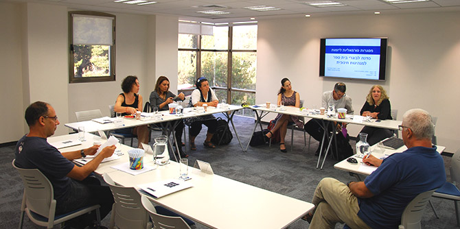

מתי נכון להפוך את היוזמה שלנו לארגון? מה מתאים יותר – עמותה או חברה לתועלת הציבור? איך יודעים ומי קובע? בשאלות אלו ואחרות עסקו משתתפי הסדנה "מסגרות ארגוניות פורמליות ליזמות חינוכית-חברתית" שהתקיימה ביחידת הבוגרים בירושלים ב-15.9.16 בהנחיית עו"ד יעקב (ינקלה) שטיינברג, בוגר מחזור י' של בי"ס מנדל למנהיגות חינוכית, המתמחה בייעוץ להקמת ארגונים.
רבים מהבוגרים עומדים במהלך חייהם המקצועיים בפני הצורך להחליט על מסגרות ארגוניות פורמליות ומשפטיות שבאמצעותן יובילו את הגשמת חזונם וירחיבו את מעגלי השפעתם. הסדנה פותחה בשיתוף עם עו"ד שטיינברג כדי לאפשר לבוגרי מנדל לקבל את הידע והכלים הדרושים להם לשם קבלת החלטות מושכלות בצומתי קבלת ההחלטות של יוזמותיהם.
בסדנה השתתפו גם 10 בוגרים יזמים שמאחוריהם ניסיון בהקמת ארגונים, וכן בוגרים המתלבטים בשאלה כיצד להפוך את הרעיון שלהם לידי עשייה בפועל. היא עסקה במכלול רחב של היבטים: מושגי היסוד הנוגעים למסגרות התארגנות והתאגדות פורמליות של פעילויות בתחומי החינוך והחברה (ישות משפטית, התאגדות, מלכ"ר, חברה בע"מ, חברה לתועלת הציבור, עוסק, עמותה, הקדש, חוזה, מודל עסקי / כלכלי). בהמשך ניתחו המשתתפים את תהליך הבירור שעל כל אחד מהם לעבור כדי לקבל החלטה על המסגרת המתאימה, ותרגלו את מערכת השיקולים המנחים את הבחירה בצמתים השונים לאורך מחזור חיי היוזמה: גיבוש הרעיון, הקמה, התבססות, התמסדות, צמיחה, ניהול שוטף, שליטה, מעבר ופרדה, משברים וסיום. לבסוף דנו בנושאים של כסף, אינטרסים שליטה וכוח, נכסים רוחניים והון – נושאים הנתפסים על-ידי יזמים כ"רע הכרחי". עו"ד שטיינברג ביקש להדגים שהם חלק בלתי נפרד מתהליך קבלת ההחלטות, וכי יש לעסוק בהם בדיוק כמו בכל שאר התהליכים הסובבים את תהליך מימוש היוזמה.

{kind=link}